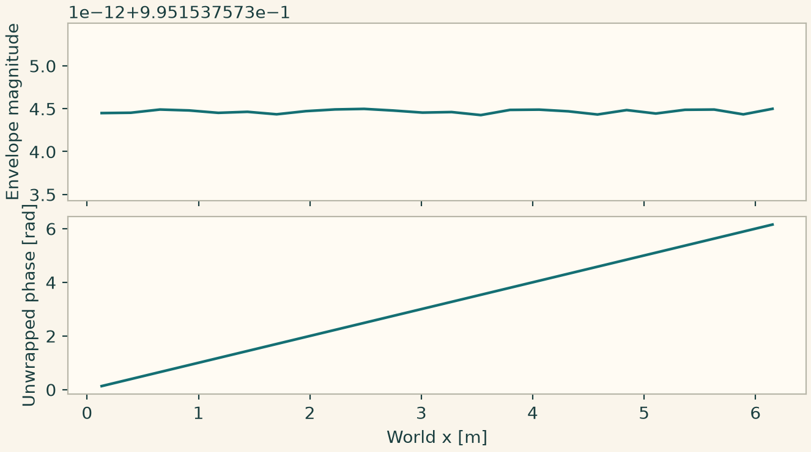

Docs › Build a first case in each physics package › Optics
5.14 Optics
onesim.physics.optics
Use ComplexParaxialEnvelope for a complex field in a frame moving at group_speed, ParaxialEnvelope for separate real and imaginary fields, and PhotonEnvelope for the related photon-energy observables. Specify wavenumber in m\(^{-1}\), group speed in m/s, permittivity and material or source perturbations. Set a complex initial amplitude for model.envelope or two real initial fields for ParaxialEnvelope. A periodic Fourier mode isolates diffraction, phase and absorption. Sample complex amplitude on a line and plot \(\lvert E\rvert\) and \(\arg E\) in separate panels. The propagation coordinate in that model is \(z=v_g t\). test_optics_method_flexibility.py uses selected FD, FV and DG diffusion, an explicit stability rule or an implicit step. A complex dtype and a stability bound appropriate to a dispersive operator matter when switching methods.
# Use run_periodic_line from this chapter.
from onesim.numerics.fvm import FiniteVolume, TwoPointDiffusion
from onesim.numerics.linear import SparseDirect
from onesim.numerics.nonlinear import Newton
from onesim.numerics.time import BackwardEuler
from onesim.physics.optics import ComplexParaxialEnvelope
line = Line(start=(0, 0, 0), end=(2*np.pi, 0, 0))
optical = ComplexParaxialEnvelope(
domain=line.line, wavenumber=2.0, group_speed=1.0, permittivity=2.0,
absorption=0.1, refractive_index_perturbation=0.05,
)
result = run_periodic_line(
line, optical, ((optical.envelope, lambda x: np.exp(1j*x)),),
Numerics(
spatial=FiniteVolume(diffusion=TwoPointDiffusion()),
time_integrator=BackwardEuler(),
nonlinear_solver=Newton(
linear_solver=SparseDirect(), jacobian="colored_finite_difference",
relative_tolerance=1e-11, absolute_tolerance=1e-12,
),
),
cells=24, end=0.02, dt=0.005,
)
E = result.field(optical.envelope)
x = E.space.dof_coordinates[:, 0]
reference = np.sinc(1/24) * np.exp(1j*x + (-0.1 - 0.15j)*0.02)
np.testing.assert_allclose(E.values, reference, atol=2e-4, rtol=0)
import matplotlib.pyplot as plt
import onesimulation_plot_theme as theme
theme.use_theme()
fig,(a,b)=plt.subplots(2,1,sharex=True,figsize=(6.8,3.8),layout="constrained")
a.plot(x,np.abs(E.values));a.set_ylabel("Envelope magnitude")
b.plot(x,np.unwrap(np.angle(E.values)))
b.set(xlabel="World x [m]",ylabel="Unwrapped phase [rad]")
plt.show()

Plot np.abs(E.values) and np.unwrap(np.angle(E.values)) against the physical coordinates. The first panel shows attenuation and the second shows phase. A complex-valued error comparison checks both quantities at once.